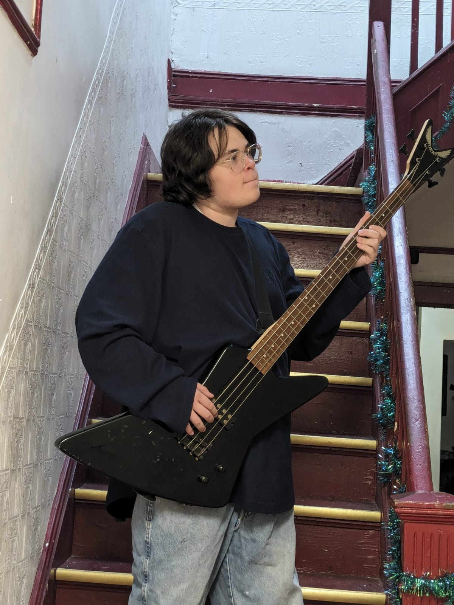
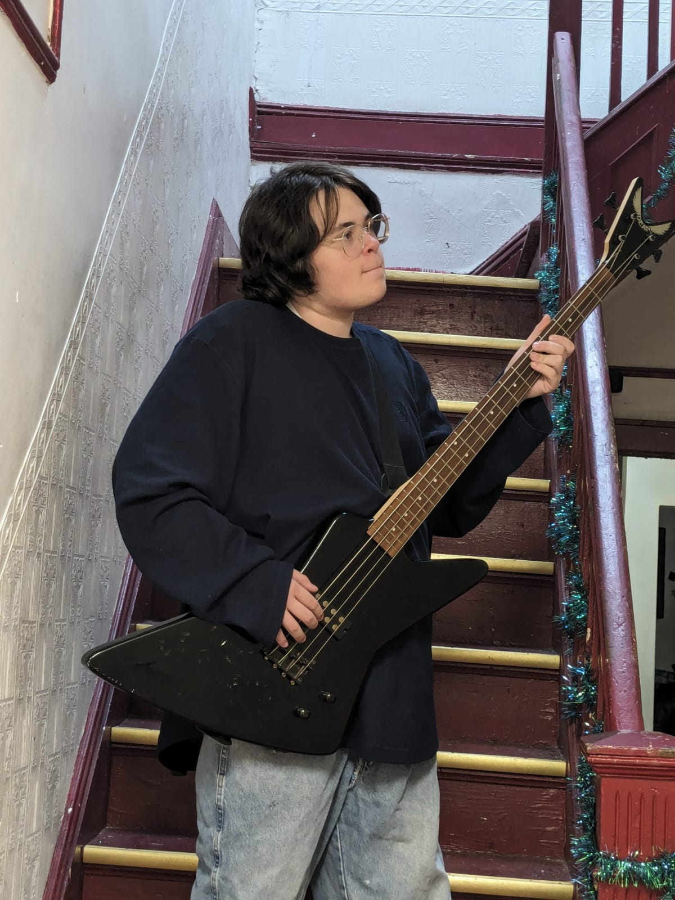

Emanuel G. Morrison
 

I'm a student at TAEHS, I wouldn't mind to help you out with anything, and I can play the drums and bass-guitar.
Here is a demo where you gent to decide what will happen to this fellow here. It's simple, but fun.
I made this for a friend who wanted me to make a page for her inspiration, Beethoven, who is an interesting person.
This is a page I created for a friend.
It's a fun game where you get to hit some moles, a classic.
This is where you could type in what you have todo for a certain day. Convienent!
This is just so you could put whatever memes you wanted on.
I made this for a project and for fun.
I made this for the school of what I wanted change, not much tbh, just change the images and thats all.
This is for a exam I'm studying for.
I've worked at my school during the summer for SYP,I work with computer i.e; rebooting, cleaning, and powerwashing them so we could reuse the chromebooks and give them to the 9th graders. cleaning and maintaining cars,moving stuff from point A to point B, painted one room in the building, and replacing the school computers with newer models. I as also in JROTC, and was private first class.
Phone number: 929-372-9593
email: emanuelmorrisonwork@gmail.com